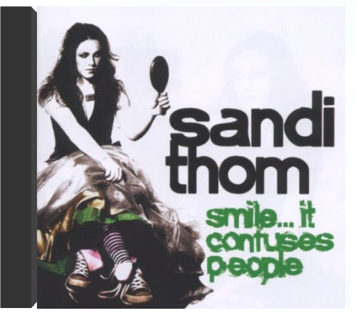
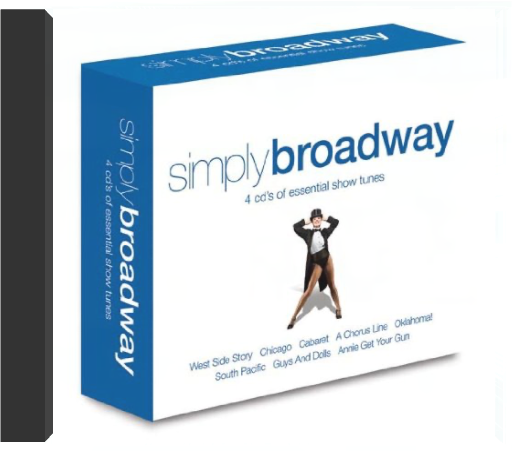
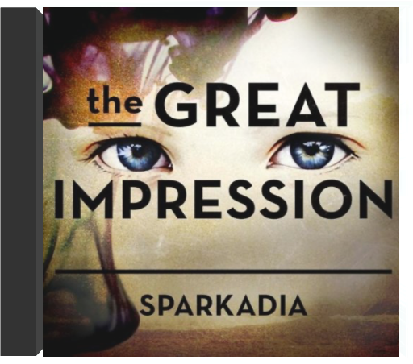
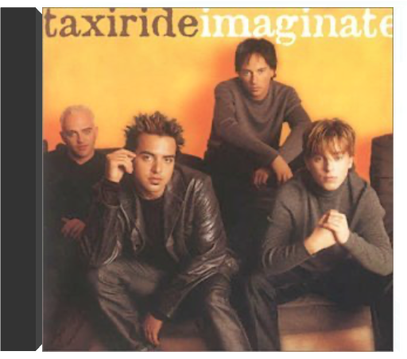
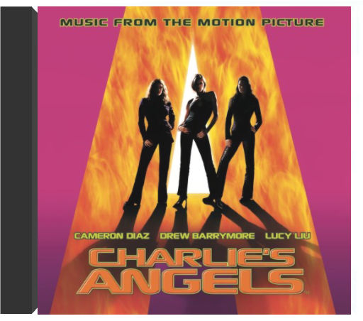

2-LP gatefold set; Ry Cooder produced & played on this project recorded in Havana, Cuba, which features some great Cuban musicians, many never heard outside their native land, including pianist Ruben Gonzalez.  Smile...It Confuses PeopleSandi Thom Smile...It Confuses People by Sandi Thom  Simply BroadwaySimply Broadway 2007 four CD box set that contains all the essential hit songs from all the big stage shows and musicals. An amazing cross section of shows from over four decades. Annie Get Your Gun, There's No Business Like Show Business, Pal Joey, Brigadoon, Oklahoma!, As Thousands Cheer, South Pacific, Show Boat, Carousel, Guys & Dolls, My Fair Lady, Paint Your Wagon, The King & I, Call Me Madam, The Music Man, Funny Girl, West Side Story, Can Can, Camelot, The Sound Of Music, Chicago, Grease, Cabaret, Hair, Godspell, Man Of La Mancha, A Chorus Line, Beauty & The Beast, The Lion King, Mack & Mabell and more! 56 tracks. Simply.  Great ImpressionSparkadia The Great Impression is the 12 track USA debut album from Australian indie pop-rockers Sparkadia. Front man and founding member Alex Burnett shows great skill in his songwriting, seamlessly melding 80 s style synth lines and sprawling, anthemic choruses with evocative lyrics to form a record that is heartbreaking and uplifting all at once. |  ImaginateTaxiride Melbourne-based outfit which broke in Australia after spending time honing its skills in the US. This first album from the four-piece rock outfit, Imaginate debuted at number one on the Australian charts. Produced by Goo Goo Dolls and Tonic studio associate Jack Joseph Puig, Imaginate features the two huge singles 'Get Set' and 'Everywhere You Go' and the album's CD-ROM component features the video for these two singles. In ConcertTom Lehrer All products are BRAND NEW and factory sealed. Fast shipping and 100% Satisfaction Guaranteed.  Charlie's AngelsVarious Artists All products are BRAND NEW and factory sealed. Fast shipping and 100% Satisfaction Guaranteed. |

Doddridge Library
Collection Total:
417 Items
417 Items
Last Updated:
Apr 21, 2020
Apr 21, 2020
 Made with Delicious Library
Made with Delicious Library